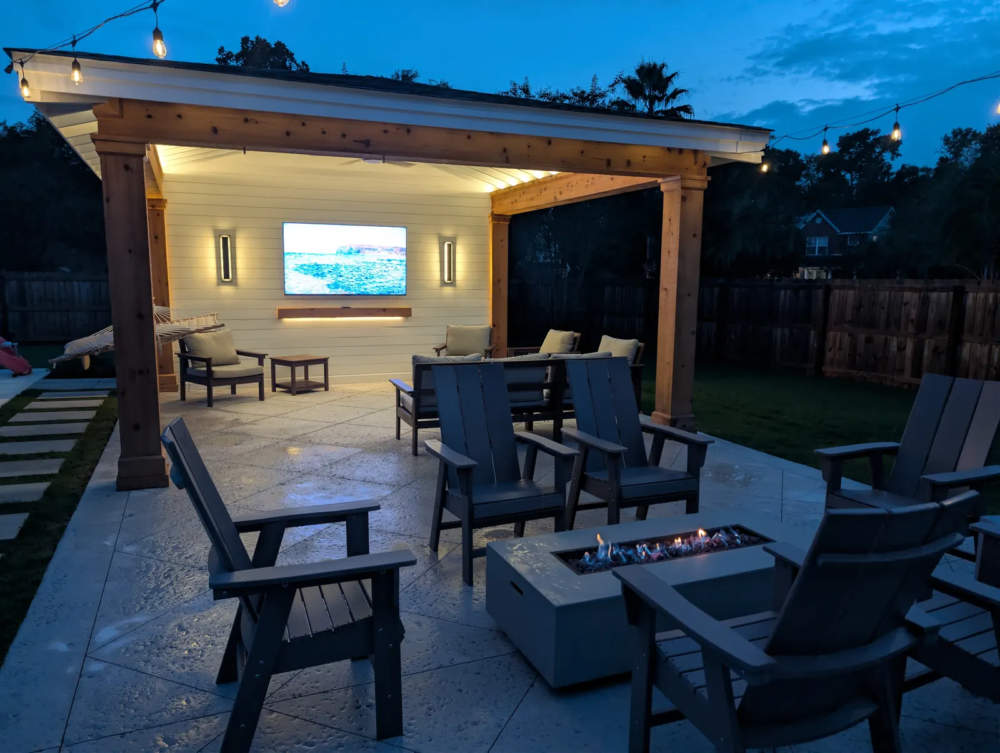

How a Landscape Lighting System Should Be Designed

Anyone Can Push Fixtures Into the Ground
Anyone can push fixtures into the ground. What separates a system that still works in five years is how it is designed, what it is made of, and how it is wired.

Design in Layers, Not Fixtures
We plan lighting in three layers, in this order:
- Function. Pathways and stairs, so the yard is safe to walk after dark.
- Structure. Trees, up and down, which is what gives the property depth instead of a flat black backdrop.
- Accent. Columns, the house itself, and whatever the focal points are.
Designing in that order also means the budget goes to the parts that matter if it runs out.
The Specification That Matters
- Low voltage throughout.
- Aluminum or brass fixtures. Brass is the upgrade and the one we would put in our own yard. In salt air, fixture material is not a detail.
- A transformer sized for the run, plus a timer. Neither is optional, and they are the part of the quote homeowners do not expect.
- App-capable controllers where you want schedule control without walking outside.
Cost runs about $200 a light installed, with the size of the job and the fixture moving it.

Wiring It With the Rest of the Project
The cheapest time to wire a yard is while it is open. If a patio, a structure or a planting bed is going in, that is the moment to run conduit out to the trees and the far corners.
Retrofitting a lit yard later means trenching through finished planting or cutting a patio. We run our own electrical, so the lighting gets planned with the build rather than after it.
Lighting the Structures We Build
On a pergola or pavilion the lighting is part of the carpentry: tape lighting hidden above beams to wash a finished ceiling, sconces at eye level, bistro lights over the patio beyond. Three sources doing three different jobs, all wired before the ceiling goes up.
See landscape lighting for the service, or ten lighting ideas for what to light.
Frequently Asked Questions
How is a landscape lighting system designed?
In three layers: function first (paths and steps), then structure (trees, up and down lighting), then accent lighting on columns, the house and focal points.
What kind of fixtures should I use in coastal Charleston?
Low voltage, in aluminum or brass. Brass is the upgrade and worth it on a property you plan to keep, because fixture material matters in salt air.
Do I need a transformer and timer?
Yes, every system needs both. They are usually the part of the quote homeowners do not expect, and they decide whether the system still works properly in five years.
When should lighting be wired?
While the yard is open. Running conduit during a patio, structure or planting install is far cheaper than trenching through finished work later.
Planning a Project of Your Own?
See everything we design and build, or get in touch to talk through your ideas with Doug and Zach.